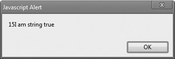
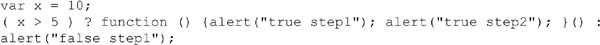
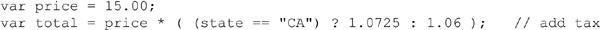
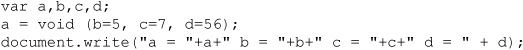
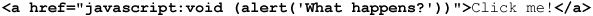
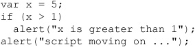
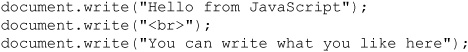

This chapter provides an overview of the basic building blocks of every script: operators, expressions, and statements. The data types introduced in the last chapter are used directly as literals or within variables in combination with simple operators, such as addition or subtraction operators, and so on, to create expressions. An expression is a code fragment that can be evaluated to some data type the language supports. For example, 2+2 is an expression with the numeric value 4. Expressions are, in turn, used to form statements —the most basic unit of script execution. The execution of statements is controlled using conditional logic and loops.
For those readers new to programming, after reading this chapter simple scripts should start to make sense. For experienced programmers, this chapter should contain no surprises because JavaScript is similar to so many other languages: arithmetic and logical operators are part of the language, as are traditional imperative flow-control constructs such as if, while, and switch. Seasoned programmers may only need to skim this chapter with an eye for the subtleties of the language.
A JavaScript program is made up of statements. For example, a common statement we saw in the last chapter is one that assigns a value to a variable. The statements here use the keyword var to define variables and the assignment operator (=) to set values for them.
Assignment uses the = operator and places the value on the right-hand side into the variable on the left. For example,
adds 10 to y and places the result in x.
Whitespace between tokens is not significant in JavaScript. For example, the following two statements are equivalent:
However, do not make the leap that whitespace is not important; on the contrary, it can be very problematic, particularly for the novice programmer. For example, while the following are equivalent:
if you were to remove the space between the keyword var and x you would have
which actually would create a new variable called varx. In other cases, you will see that the omission of white space will cause syntax errors. This is particularly common because line breaks can be used for statement termination in JavaScript.
NOTE Under ECMAScript 5 strict mode, the previous example would have been caught as a syntax error because automatic variable creation is disallowed.
A semicolon is primarily used to indicate the end of a JavaScript statement. For example, you can group multiple statements on one line by separating them with semicolons:
You can also include more complicated or even empty statements on one line:
The translation of the preceding line is as follows: after incrementing x, the interpreter skips past the two empty statements, sets x to 0 if x is greater than 10, and finally decrements y. As you can see, including multiple statements on one line makes code hard to read and should be avoided in production code, though we note that for delivered code it may be appropriate, as it is a minified form.
Although semicolons should follow statements, in JavaScript they can be omitted if your statements are separated by a line break. The following statements
are treated the same as
Of course, if you wish to include two statements on one line, a semicolon must be included to separate them, like so:
This feature is called implicit semicolon insertion. The idea seems nice: to free programmers from having to remember to terminate simple statements with semicolons. However, the reality is that relying on this feature is a dubious practice. It can get you into trouble in numerous ways. For example, given the last example, these statements
are fine. However, if you make it
you will throw an error. Also, if you break a statement up into multiple lines you might cause a problem. A classic example is the return statement. Because the argument to return is optional, placing return and its argument on separate lines causes the return to execute without the argument. For example,
is treated as
rather than what was probably intended:
For this reason and others, such as readability of your code, terminating statements with a line break and relying on implicit semicolon insertion is not only poor programming style, but invites errors and should be avoided.
Curly braces ({ }) are used to group a series of consecutive statements together. Doing so creates one large statement, so a block of statements enclosed in curly braces can be used anywhere in JavaScript that a single statement could. For example, a statement is expected as the body of an if conditional:
Because a block is treated as a single statement, you could also write
As we’ve said, whitespace between tokens isn’t significant, so the placement of curly braces with respect to an associated statement is merely a matter of style. While correct alignment of blocks can certainly improve code readability, the slight differences between
and
are really more an issue of personal preference than anything else, despite endless flame wars to the contrary. We will aim to be consistent with our choice in example, but, frankly, this is somewhat arbitrary, and readers are of course welcome to change examples to fit their favorite formatting style as they type them in.
Similarly, it is customary (but not required) to indent the statements of a block to improve readability:
Indenting nested blocks some consistent number of spaces gives the reader a visual cue that the indented code is part of the same group.
Statements, regardless of their groupings or style, generally modify data. We say they operate on data, and the parts of the language that do so are called operators.
JavaScript supports a variety of operators. Some of them, such as those for arithmetic and comparison, are easy to understand, even for those new to programming. Others, such as the bitwise AND (&), increment (++), and some conditional (?) operators, may be less obvious to those who have not programmed before. Fortunately for readers of all levels, JavaScript supports few operators that are unique to the language, and the language mimics C-like languages, both in the kinds of operators it provides and in their functionality.
The most basic operator is the assignment operator (=), which is used to assign a value to a variable. Often this operator is used to set a variable to a literal value, such as in these examples:
Generally, the assignment operator is used to assign a value to a single variable, but it is possible to perform multiple assignments at once by stringing them together with the = operator. For example, the statement
sets all three variables to a value of 7. Be careful here, though, because the first variable x, depending on where the variable is being defined, may be in a local scope, while the y and z may be the global scope, as the var statement applies only to the first variable in the expression.
Assignments can also be used to set a variable to hold the value of an expression. For example, this script fragment demonstrates how variables can be set to the sum of two literal values as well as a combination of literals and variables:
JavaScript supports all the basic arithmetic operators that readers should be familiar with, including addition (+), subtraction (–), multiplication (*), division (/), and modulus (%, also known as the remainder operator). Table 4-1 details all of these operators and presents examples of each.
Table 4-1 Basic Arithmetic Operators
NOTE JavaScript itself doesn’t directly support any mathematical operations other than the basic ones discussed here. However, the specification does provide the Math object, which contains more than enough methods available to accommodate most advanced mathematical calculations. The section entitled “Math” in Chapter 7 provides an overview of these features.
NOTE Recall from Chapter 3 that numeric values can take on special values such as Infinity or –Infinity, as a result of becoming respectively too large or small to be represented, or NaN, as the result of an undefined operation such as 0/0.
The addition operator (+) has a different behavior when operating on strings as opposed to numbers. In this other role, the + operator performs string concatenation. That is, it joins its operands together into a single string. The following outputs the string “JavaScript is great” to the document:
Of course, you’re not limited to just joining two string variables together. You can join any number of strings or literals together using this operator. For example:
After execution, the variable goodBook contains the string “The Time Machine by H.G. Wells”.
The fact that + operates in one way on numbers and in another on strings gives rise to a subtlety of JavaScript that often trips up beginners, which is what happens when you use + in an expression in which one operand is a string and the other is not. For example:
The rule is that the interpreter will always treat the + operator as string concatenation if at least one of the operands is a string. So the preceding code fragment results in assignment of the string “Mixed types10” to x. Automatic type conversion was carried out in order to convert the number 10 to a string. (See Chapter 3 for more information on type conversion.)
There is one further wrinkle with the + operator. Because addition and concatenation in an expression are evaluated by the interpreter from left to right, any leading occurrences of + with two numeric operands (or types that can be automatically converted to numbers) will be treated as addition. For example,
displays the following dialog:

The addition of w and x happens before the string concatenation occurs. However, you could force a different order of evaluation with the appropriate application of parentheses. See the section “Operator Precedence and Associativity,” later in this chapter, for more information.
One trick often used to force + to function as string concatenation is to use the empty string at the beginning of the expression. For example:
The result is
To force + to operate as addition, you need to use an explicit type conversion function, as discussed in Chapters 3 and 7, or use the unary plus operator scheme discussed next.
NOTE JavaScript also supports a great number of other string operations beyond concatenation, but most of these are part of the String object, which is discussed in Chapter 7.
A single plus sign can be placed in front of a literal value or variable. It operates on only a single value (or operand) and thus is termed a unary operator. The unary plus operator can be placed in front of a numeric literal and generally appears to do nothing:
It might be assumed that the operator can make a value positive:
but it doesn’t do this. However, it can be used, as shown previously in Chapter 3, to perform a type conversion. These few examples should illustrate the operator’s value:
Notice that the unary + conversion is similar to the Number() constructor, rather than parseInt() or parseFloat(), as it does not stem any values off the front of strings.
Given these examples, we see that the unary + operator can be useful to quickly convert some collected string value to a number, as shown here:
Another use of the – symbol besides subtraction is to negate a value. As in basic mathematics, placing a minus sign in front of a value will make positive values negative and negative values positive. The basic use of the unary negation operator is simple, as illustrated by these examples:
JavaScript supports the entire range of bitwise operators for the manipulation of bit strings (implemented as the binary representation of integers). JavaScript converts numeric data into a 32-bit integer before performing a bitwise operation on it. The operator in question is then applied, bit by bit, to this binary representation.
As an example, if we were to perform a bitwise AND operation (&) on 3 and 5, first the numbers would be converted to bit strings of 00000011 for 3 and 00000101 for 5 (we omit the leading 24 0’s). The AND of each digit is then computed, with 1 representing true and 0 representing false. The truth tables for the AND, OR, and XOR (exclusive OR) operations on bits are shown in Table 4-2.
Table 4-2 Truth Tables for Bitwise Operations
So given the results specified in Table 4-2, if we AND the two bit strings in our example together, we get the value shown here:
This bit string has the decimal value of 1. If you try
you will see the appropriate result, shown here:
Table 4-3 shows the bitwise operators JavaScript supports, as well as examples of their usage.
Table 4-3 JavaScript’s Bitwise Operators
The bitwise NOT operator (~) can be a little confusing. Like the other bitwise operators, ~ converts its operand to a 32-bit binary number first. Next, it inverts the bit string, turning all zeros to ones and all ones to zeros. The result in decimal can be somewhat confusing if you are not familiar with binary representations of negative numbers. For example, ~3 returns a value of –4, while ~(–3) returns a value of 2. An easy way to calculate the result manually is to flip all the bits and add 1 to the result. This way of writing negative numbers is the two’s complement representation and is the way most computers represent negative numbers.
NOTE It is possible to use any numeric representation JavaScript supports with a bitwise operator. For example, given that the hex value 0xFF is equivalent to 255, performing a bitwise NOT (~0xFF) results in a value of –256.
The bitwise operators we’ve covered so far modify the bits of the binary representation of a number according to bitwise rules of logic. There is another class of bitwise operators that operate on the binary representation of 32-bit integers but are used to move or, like the operator name suggests, shift bits around rather than set them.
Bitwise shift operators take two operands. The first is the number to be shifted, and the second specifies the number of bit positions by which all the bits in the first operand are to be shifted. The direction of the shift operation is controlled by the operator used, << for left shift and >> for right shift. For example, given the left-shift operation of 4 << 3, the digits making up the number 4 (00000100) will be shifted left three places. Any digits shifted off the left side will be dropped, and the digits to the right will be replaced with zeros. Thus, the result is 00100000, which equals 32.
The supported bitwise shift operators are presented in Table 4-4. The difference between the right shifts >> and >>> is significant: The first operator preserves the sign in the bit string by copying the left-most bit to the right, while the second uses a zero fill, which does not preserve the sign. For nonnegative numbers, the zero-fill right shift (>>>) and sign-propagating right shift (>>) yield the same result.
Table 4-4 Bitwise Shift Operators
Given the high-level nature of JavaScript when used in a Web browser, the bitwise operators may seem a little out of place. However, remember that JavaScript’s core features are based on ECMAScript, which is the basis of many languages where low-level bit manipulations may be commonplace.
While rarely used on the Web, bitwise operators can be creatively used to store or manipulate data succinctly. They aren’t common, but they are still part of the language.
Like many languages, JavaScript offers operators that combine an arithmetic or bitwise operation with assignment. These shorthand forms let you express common statements concisely but are otherwise equivalent to their expanded forms. Table 4-5 summarizes these operators.
Table 4-5 Shorthand Assignment with Arithmetic or Bitwise Operation
Interestingly, many of the shorthand forms are not used as often as you might think; however, the one described in the next section is often used, as it describes a common form of assignment: adding or subtracting one.
The ++ operator is used to increment—or simply to add 1—to its operand. For example, with
the value of x is set to 4. Of course, you could also write the increment portion of the previous example as
Similar to the ++ operator is the -- operator, used to decrement (subtract one from) its operand. So the following leaves a value of 2 in the variable x:
Of course, this statement could also have been written the “long” way:
While adding or subtracting 1 from a variable may not seem terribly useful to those readers new to programming, these operators are very important and are found at the heart of looping structures, which are discussed later in this chapter.
A subtle nuance of the increment (++) and decrement (--) operators is the position of the operator in relation to the operand. When the increment operator appears on the left of the operand, it is termed a pre-increment, while if it appears on the right it is a post-increment. The importance of the position of the operator is best illustrated by an example. Consider this script:
You will see
even though the value of x following the alert() method will be 4. Compare this to the script
The result is more as expected:
and of course the variable x will contain 4 on conclusion. What’s going on here is that the value the operand takes on in the expression depends on whether the operator is pre- or post-increment. Pre-increment adds one to the value of the operand before using it in the expression. Post-increment adds one to the value after its value has been used. Pre- and post-decrement work the same way.
NOTE It is not possible to combine pre- and post-increment/decrement at the same time; for example, ++x++ results in an error.
A comparison expression evaluates to a Boolean value indicating whether its comparison is true or false. Most of JavaScript’s comparison operators should be familiar from elementary mathematics or from other programming languages. These operators are summarized in Table 4-6.
Table 4-6 Comparison Operators
A few of these operators warrant further discussion, particularly the equality operators. A common mistake is using a single equal sign (=), which specifies an assignment, when one really wants a double equal sign (==), which specifies the equality comparison. The following example illustrates this problem in action:
In this situation, regardless of the values of the variables, the if statement will always evaluate true:
This happens because the value of an assignment statement in an expression is the value that was assigned (in this case 5, which when automatically converted to a Boolean is true; zero is false and non-zero is true).
More interesting is the situation of values that do not appear the same but compare as such. For example,
returns a true value because of JavaScript’s automatic type conversion:
Strict equality is handled using the identity operator (===), as shown here. This operator returns true if the operands are equal and of the same type (that is, it does no type conversion). The script,
displays false as expected:
NOTE The comparison operators === and !== are not available in very early browsers such as Netscape 2 and 3, though they are available in JavaScript 1.3 and beyond.
While it is clear what comparison operators mean for numbers, what about strings? For example, is the following expression true?
When you compare strings, JavaScript evaluates the comparison based on a string’s lexicographic order. Lexicographic order is essentially alphabetic order, with a few extra rules thrown in to deal with upper- and lower-case characters, as well as to accommodate strings of different lengths.
The following general rules apply:
• Lowercase characters are less than uppercase characters.
• Shorter strings are less than longer strings.
• Letters occurring earlier in the alphabet are less than those occurring later.
• Characters with lower ASCII or Unicode values are less than those with larger values.
The interpreter examines strings on a character-by-character basis. As soon as one of the previous rules applies to the strings in question (for example, the two characters are different), the expression is evaluated accordingly.
The following comparisons are all true:
While this ordering might seem confusing at first blush, it is quite standard and consistent across most programming languages. Of course, given JavaScript’s weak typing, you can imagine that trouble can be encountered quickly; for example, if you see 10 coming before 9 in a sort, it isn’t wrong; the values just became a string, so it was really “10” coming before “9”.
As previously stated, the comparison operators described in the preceding section evaluate to Boolean values. The logical operators && (AND), || (OR), and ! (NOT) are useful for combining such values together in order to implement more complicated logic. Descriptions and examples of each logical operator are shown in Table 4-7.
The most common use of the logical operators is to control the flow of script execution using an if statement. (See the section titled “if Statements,” later in this chapter, for use of logical operators within an if statement.) The conditional operator (?), discussed next, is similar to the if statement and can be used in an expression, whereas an if statement cannot.
The ? operator is used to create a quick conditional branch. The basic syntax for this operator is
where expression is any expression that will evaluate eventually to true or false. If expression evaluates true, then if-true-statement is evaluated and returned. Otherwise, if-false-statement is executed and returned. In this example,
result will contain a different string based on the value of the variable x. Contextually, if the conditional expression evaluates true, the first statement indicating the value is greater than 5 is returned; if false, the second statement stating the opposite will be returned.
Often developers throw away the return value and may employ the ? operator as some shorthand notation for an if statement. For example,
would perform an alert, depending on the value of x. This seems very much as an if statement, which would be written as:
While in some languages its usage is somewhat rare, the conditional operator is used relatively frequently by JavaScript programmers. For example, here we see it employed with object detection:
This compact script sets the variable nativeJSON to true or false depending on the existence of native JSON support in a browser. For readability, you still may prefer if statements, but the terseness of this operator does make it useful in large scripts that need to perform a great deal of simple conditional checks.
One apparent difference between ? and if is that the ? operator allows only a single statement for the true and false conditions. Thus,
doesn’t work. In fact, because the ? operator is used to form a single statement, the inclusion of the semicolon (;) anywhere within the expression terminates the statement. Adding a block is not allowed. There is, however, a workaround using an anonymous function expression, as follows:

While it would seem that we can make ? act like an if statement, the converse doesn’t work because if is a statement and an expression. Here we show a quick demonstration of the flexibility of the conditional operator in an expression:

The equivalent if statement would have taken several lines to write.
The comma operator (,) allows multiple expressions to be strung together and treated as one expression. Expressions strung together with commas evaluate to the value of the rightmost expression. For example, in this assignment, the final assignment will return the value 56 as a side-effect; thus, the variable a is set to this value:
The comma operator is rarely used in JavaScript outside of variable declarations, except occasionally in complex loops expressions, as shown here:
However, the use of the comma operator is not suggested.
NOTE Commas are also used to separate parameters in function calls (see Chapter 5). This usage really has nothing to do with the comma operator and, for many, reaffirms the operator as more syntactic sugar than valuable operator.
The void operator specifies an expression to be evaluated without returning a value. For example, take the previous example with the comma operator and void it out:

In this case, the value of a will be undefined, as shown here:
The most common use of the void operator is when using the javascript: pseudoURL in conjunction with an HTML href attribute. Some browsers, notably early versions of Netscape, had problems when script was used in links, as it may return a true or false value effecting link load. The only way to avoid these problems and force a link click to do nothing when scripting is on is to use void, as shown here:

While modern browsers implement pseudo-URLs properly, this practice interestingly has not fallen completely out of use and currently serves as a talisman statement doing little but looking impressive.
The typeof operator returns a string indicating the data type of its operand. The script fragment here shows its basic use:
Table 4-8 shows the values returned by typeof on the basis of the type of value it is presented.
Table 4-8 Return Values for the typeof Operator
The last set of operators to discuss before moving on to statements are the various object operators.
This section provides a syntax overview of various JavaScript object operators. A more complete discussion with usage can be found in Chapter 6. For now, recall from Chapter 3 that an object is a composite data type that contains any number of properties and methods. Each property has a name and a value, and the period (.) operator is used to access them; for example,
references the lastModified property of the document object, which contains the date that an HTML document was last modified.
Object properties can also be accessed using array bracket operators ([ ]) enclosing a string containing the name of the property. For example,
is the same as
A more common use of square brackets is the array index operator ([ ]) used to access the elements of arrays. For example, here we define an array called myArray:
To display the individual elements of the array starting from the first position (0), we would use a series of statements such as these:
In the previous example, we created an Array object using an array literal. We could also have used the new operator to do so. For example:
The new operator is used to create objects. It can be used both to create user-defined objects and to create instances of built-in objects. The following script creates a new instance of the Date object and places it in the variable today.
The result is shown here:
Commonly, programming languages that allow you to create an object with new allow you to destroy one with delete. This isn’t quite true of JavaScript. To destroy an object, you set it to null. For example, to destroy the object in the previous example, you would write
In JavaScript, the delete operator is used to remove a property from an object and to remove an element from an array. The following script illustrates its use for the latter purpose:
Notice that the third item, 78, has been removed from the array:
Note, of course, that while this action may detail the contents of myArray[2], the length of the array is still three and the value of myArray[3] stays 1767. Shifting elements around and performing other operations on arrays requires using the methods described in Chapter 7.
The last operator that is associated with objects is the parentheses operator. This operator is used to invoke an object’s method just as it invokes functions. For example, we have already seen the Document object’s write() method:
In this case, we pass a single parameter, the string “Hello from JavaScript”, to the write method so that it is printed to the HTML document. In general, we can invoke arbitrary object methods, as follows:
Operators have a predefined order of precedence—that is, the order in which they are evaluated in an expression. This is particularly obvious with arithmetic operators and is similar to the evaluation of equations in algebra, where multiplication and division have higher precedence over addition and subtraction. For example, the result of
will be 8 because the multiplication is performed before the addition. We see that multiplication has higher precedence than addition. Using parentheses, we can group expressions and force their evaluation in an order of our choice. Parenthesized expressions are evaluated first. For example,
will display 10.
Of course, expression evaluation is also influenced by the operator associativity. Associativity essentially means the “direction” in which an expression containing an operator is evaluated. For example, consider the following combination of addition and string concatenation operations:
The result will be the string “11Hello” rather than “56Hello”. Even though the two instances of + would appear to have the same precedence, the + operator is “left associative,” meaning that it is evaluated left to right, so the numeric addition is performed first. Conversely, in this example,
the multiplication is performed first because the assignment operator (=) is “right associative.” The result is that 100 is computed, then assigned to y, and only then assigned to x.
The precedence and associativity of the various operators in JavaScript are presented in Table 4-9. Note that by computer science tradition, precedence is indicated by a number, with lower numbers indicating higher precedence.
Table 4-9 Precedence and Associativity of JavaScript’s Operators
Based on this discussion of operator precedence, you might assume that using parentheses could force the evaluation of all the operators discussed so far. However, this isn’t always the case. For example, consider the post- and pre-increment/decrement operators. As we saw earlier, the results of
and
show different values because of the difference when the incrementing happens in relation to the application of the alert() method. However, if you add parentheses and try to force the incrementing to always happen before the alert is displayed, as shown here,
you won’t see any difference.
Now that we have covered all of the various operators in JavaScript, it is time to combine these together and form full statements.
JavaScript supports a core set of statements that should be familiar to anyone who has programmed in a modern imperative programming language. These include flow control (if-else, switch), loops (while, do-while, for), and loop control (break and continue). JavaScript also supports some object-related statements (with, for-in), as well as some basic error handling (try-catch-throw).
The if statement is JavaScript’s basic decision-making control statement. The basic syntax of the if statement is
The given expression is evaluated to a Boolean, and, if the condition is true, the statement is executed. Otherwise, it moves on to the next statement. For example, given this script fragment,

the expression evaluates to true, displays the message “x is greater than 1,” and then displays the second alert dialog afterward. However, if the value of variable x were something like zero, the expression would evaluate false, resulting in skipping the first alert and immediately displaying the second one that the script has moved on.
To execute multiple statements with an if statement, a block could be used, as shown by the simple example here:
Additional logic can be applied with an else statement. When the condition of the first statement is not met, the code in the else statement will be executed:
Given this syntax, we could expand the previous example as follows:
More advanced logic can be added using else if clauses:
This simple example illustrates how if statements might be chained together:
As you can see, it is pretty easy to get carried away with complex if-else statements.
When if statements are nested deeply, we run into the always contentious decision of whether or not the ever-increasing numbers of matched curly braces ({ }) should be formatted. Some people prefer a style that aligns the braces underneath in a straight line:
Others prefer a method that matches the right close brace to the expression and avoids burning an extra line for the opening brace, like so:
It probably doesn’t really matter which method you choose for complex if statements, as long as you are consistent. Interestingly, the need for such a debate suggests the consideration of a switch statement, discussed shortly, which often can be a more elegant alternative to long if-else chains. However, before moving on, we should illustrate a subtlety with the logical expressions.
Like many languages, JavaScript “short circuits” the evaluation of a logical AND (&&) or logical OR (||) expression once the interpreter has enough information to infer the result. For example, if the first expression of an || operation is true, there really is no point in evaluating the rest of the expression, since the entire expression will evaluate to true, regardless of the other value. Similarly, if the first expression of an && operation evaluates to false, there is no need to continue evaluation of the right-hand operand since the entire expression will always be false. The script here demonstrates the effect of short-circuit evaluation:
ONLINE http://javascriptref.com/3ed/ch4/shortcircuiteval.html
The results of the script are shown in Figure 4-1. Notice how the second part of the script executes only the left half of the logical expression.
Figure 4-1 Short-circuit evaluation in effect
Because logical expressions rarely have side effects, the subtlety of short-circuit evaluation of logical expressions often won’t matter to a programmer. However, if the evaluation produces the side effect of modifying a value, a subtle error may result because of the short circuit. There is one useful use in the world of JavaScript, though, as discussed next.
Performing object detection in JavaScript is much improved by the inclusion of short-circuit evaluation. For example, say you were interested in seeing if a browser supported some DOM feature. You could use the document.implementation.hasFeature() method. However, invoking this method in some ancient browser might be a bit dangerous, as you are assuming that it and its parent object implementation exist, short circuit to the rescue. First, we utilize the fact that JavaScript’s weak typing can be used for good since it converts an object to true if it exists and false if not. So this
safely executes since if the document.implementation object doesn’t exist it converts to false and the if statement stops executing. If it does exist, it then safely further evaluates the hasFeature() method. Knowing the details of JavaScript really can help us more properly use it.
Starting with JavaScript 1.2, you can use a switch statement rather than relying solely on if statements to select a statement to execute from among many alternatives. The basic syntax of the switch statement is to give an expression to evaluate and several different statements to execute based on the value of the expression. The interpreter checks each case against the value of the expression until a match is found. If nothing matches, a default condition will be used. The basic syntax is shown here:
The break statements indicate to the interpreter the end of that particular case. If they were omitted, the interpreter would continue executing each statement in each of the following cases.
Consider the following example, which shows how a switch statement might be used:
You could certainly imitate this idea with if statements, but doing so may be considerably harder to read:
Obviously, when using numerous if statements, things can get messy very quickly.
There are a few issues to understand with switch statements. First, it is not necessary to use curly braces to group together blocks of statements. Consider the following example, which demonstrates this:
The next aspect of switch to be aware of is that “fall through” actions occur when you omit a break. You can use this feature to create multiple situations that produce the same result. Consider a rewrite of the previous example that allows a bit more granularity on the grade matching:
Notice here that, depending on the entry point, the code execution falls through. For example, entering in at A, A-, B+, or B produces the same result. However, note that it is possible to be additive with fall through code. Note that the A+ entry issues a unique alert before it falls through and executes more code.
Because of JavaScript’s weak typing, you can produce some occasional odd-looking switch statements. Consider here that there is nothing wrong with having different types for the individual cases:
so this should beg the question, what happens if we set test to “5”? Does the value type convert in comparison and match the first statement? Turns out the answer is no; the comparisons are strict (=== as opposed to ==), so it will match type and value. The switch would be equivalent to the following:
As we keep demonstrating, the switch and if statements perform the concept of selection and thus are equivalent in capability, but you may be able to express some code more succinctly or clearly with one structure or another. The next set of statements we cover are loops. They are similar, and they perform the same general purpose, but they do so in slightly different ways.
Loops are used to perform some action over and over again. The most basic loop in JavaScript is the while loop, whose syntax is shown here:
The purpose of a while loop is to execute a statement or code block repeatedly as long as expression is true. Once expression becomes false or a break statement is encountered, the loop will be exited. This script illustrates a basic while loop:
ONLINE http://www.javascriptref.com/3ed/ch4/simplewhileloop.html
In this situation, the value of count is initially zero, and then the loop enters, the value of count is output, and the value is increased. The body of the loop repeats until count reaches 10, at which point the conditional expression becomes false. At this point, the loop exits and executes the statement following the loop body. The output of the loop is shown here:
The initialization, loop, and conditional expression can be set up in a variety of ways. Consider this loop that counts downward from 100 in steps of 10 or more:
One issue with while loops is that, depending on the loop test expression, the loop may never actually execute:
Lastly, an important consideration with any loop—a while loop or a loop of a different sort discussed in the following sections—is to make sure that the loop eventually terminates. If there’s no way for the conditional expression to become false, there’s no way for the loop to end. For example:
As written and performed on page load, this may crash your browser since the document keeps growing and growing. If you live dangerously, try for yourself.
ONLINE http://www.javascriptref.com/3ed/ch4/simplewhile.html
In early browsers, runaway loops were quite dangerous. Later, most vendors added script time execution safeties. For example, in many variations of Firefox, the script had to return within five seconds. The browser running a long running script could then pop a dialog to allow the user to interrupt things, as illustrated here:
This safety check is both a pro and a con. While it can help recover from bad situations, it doesn’t allow for scripts that might be intensive to run without significant hiccups. Today, in more modern browsers, it appears that script execution time limitations have been vastly increased or removed, so infinite loops are back to causing big trouble. It should be noted that in some browsers such as Firefox you can configure script timeout directly by typing about:config in the address bar and setting a max script runtime larger or smaller, as you like:
You cannot, however, assume that browsers or end users will mitigate your dangerous code. Code your loops carefully!
The do-while loop is similar to the while loop except that the condition check happens at the end of the loop. This means that the loop will always be executed at least once (unless a break is encountered first). The basic syntax of the loop is as follows:
Note the semicolon used at the end of the do-while loop.
The example here shows the while loop counting example from the preceding section rewritten in the form of a do-while loop:
The for loop is the most compact form of looping and includes the loop initialization, test statement, and iteration statement all in one line. The basic syntax is shown here:

The initialization statement is executed before the loop begins, the loop continues executing until test condition becomes false, and at each iteration the iteration statement is executed. An example is shown here:
The result of this loop would be identical to the first while loop example shown in the preceding section: it prints the numbers zero through nine. As with the while loop, by using a statement block it is possible to execute numerous statements in the loop body.
A common problem when using a for loop is the accidental placement of the semicolon at the end of the statement. For example,
will output what appears to be a single execution of the loop, as well as the statement that the loop has finished:
The reason for this is that the semicolon acts as an empty statement for the body of the loop. The loop iterates ten times doing nothing, executes the following block as usual, and then prints the loop’s finish message.
The break and continue statements can be used to more precisely control the execution of a loop. The break statement, which was briefly introduced with the switch statement, is used to exit a loop early, breaking out of the enclosing curly braces. The example here illustrates its use with a while loop. Notice how the loop breaks out early once x reaches 8:
The continue statement tells the interpreter to start the next iteration of the loop immediately. When it’s encountered, program flow will move to the loop check expression immediately. The example presented here shows how the continue statement is used to skip printing when the index held in variable x reaches 8:
A potential problem with the use of continue is that you have to make sure that iteration still occurs; otherwise, it may inadvertently cause the loop to execute endlessly. That’s why the increment in the previous example was placed before the conditional with the continue statement.
A label can be used with break and continue to direct flow control more precisely. A label is simply an identifier followed by a colon that is applied to a statement or block of code. The script here shows an example:
Notice that the outermost loop is labeled “outerloop,” and the break statement is set to break all the way out of the enclosing loops. Without the targeted break, you would only break the inner loop and much more would be output. Figure 4-2 shows the dramatic difference between the execution of the loop with and without the label.
Figure 4-2 With and without labeled breaks
A label can also be used with a continue statement. The continue statement will cause flow control to resume at the loop indicated by the label. The following example illustrates the use of labels in conjunction with continue:
The script’s output with and without the labeled continue statement is shown in Figure 4-3.
Figure 4-3 Labeled continue example
Labels stop short of providing the jump flow control of the notorious GOTO statement found in a number of programming languages and despised by many programmers.
An important group of statements to cover in JavaScript is related to the use of objects. A brief introduction to these statements is presented here, and another application-related discussion of the use of these statements, as well as of related keywords such as this, is reserved primarily for Chapter 6.
JavaScript’s with statement allows programmers to use a shorthand notation when referencing objects. For example, to write to an HTML document, normally we would use the write() method of the Document object:

The with statement indicates an object that will be used implicitly inside the statement body. The general syntax is as follows:
Using a with statement, we could shorten the reference to the object, as shown here:
The with statement is certainly a convenience, as it avoids having to type the same object names over and over again. However, it can occasionally lead to trouble because you may accidentally reference other methods and properties when inside a with statement block, so that the statement causes confusion or readability concerns. Consider the following:
Does this mean that we are saying someObj.x = someObj.y? Of course, x and y might not even be part of that object, so it might be x = y as it is; or one or the other might be part of the object, so it might mean someObj.x = y or, alternatively, x = someObj.y. Obviously, when using with, the results seem a bit confusing; and given the amount of unraveling to determining the appropriate assignment, its use isn’t going to lead to the best performance.
NOTE Under ECMAScript 5 in the strict mode enabled using “use strict”;, the with statement simply is not allowed. Besides the with statement being bad practice, its future is clearly suspect.
Another statement that is useful with objects is for…in, which is used to loop through an object’s properties. The basic syntax is this:
Consider the following example, which prints out the properties of a Web browser’s Navigator object.
This will loop and print out the properties of the browser that can be enumerated and run the script. We might further expand the script to evaluate each property to see what its value is.
ONLINE http://www.javascriptref.com/3ed/ch4/forin.html
The result when this example is run with the Chrome 5 and Internet Explorer 8 browsers is shown in Figure 4-4, and you should note that some of the property names as well as values are different.
Figure 4-4 A for-in example that reveals browser differences
This previous example shows us both how useful the for-in statement can be when used to reflect the properties that may be supported by an implementation of an object in a particular browser, as well as that what we may find there is sadly different. We’ll revisit this structure and the challenges of object specifics across browsers multiple times in this book.
There are other statements we might cover, such as error-handling statements (for example, try...catch and throw), which we will discuss in Chapter 18, and statements that are part of some not-yet-standard implementations of JavaScript. For example, versions of Firefox support emerging ideas such as let and yield, which while interesting are not standard, and at the time of this edition’s writing still quite unsafe to use. At this point, the only other core statements we have not discussed are related to functions, so let’s move on and combine the various core statements we have learned so far into these reusable units of code.
The preceding chapter presented data types as the core of the language. This chapter showed how data types can be combined using operators to form expressions. JavaScript supports operators familiar to most programmers, including mathematical (+, -, *, and %), bitwise (&, |, ^, <<, >>, and >>>), comparison (<, >, ==, ===, !=, >=, and <), assignment (=, +=, and so on), and logical (&&, ||, and !). It also supports less common operators such as the conditional operator (?) and the string concatenation operator (+). JavaScript operators are combined with variables and data literals to form expressions. Expressions must be carefully formed to reflect the precedence of evaluation, and liberal application of parentheses will help avoid any problems. Statements can then be formed from expressions to make up the individual steps of a program. Individual statements are delimited in JavaScript using a semicolon or a return character. Semicolons should always be used to avoid ambiguity and improve script safety. The most common statements are assignment statements, functions, and method calls. These perform the basic tasks of most scripts. Control statements such as if and switch can alter program flow. A variety of loops can be formed using while, for, or do-while in order to iterate a particular piece of code. Further program flow control can be achieved with break and continue. As larger scripts are built using the constructs presented in this chapter, repetitive code is often introduced. To eliminate redundancy and create more modular programs, functions—the topic of the next chapter—should be employed.